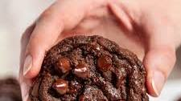
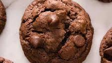
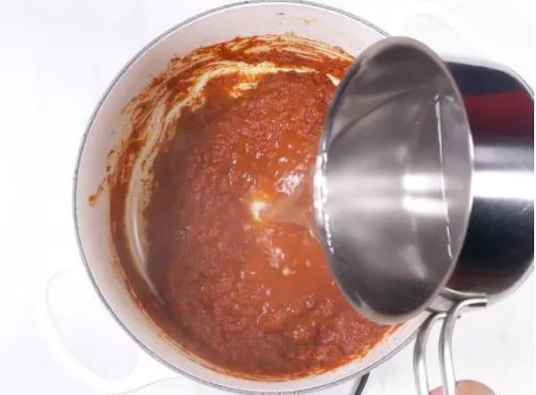
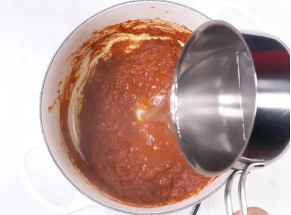

Recipes
Double Chocolate Cookies
Origin: Michigan
Source: Family Recipe
Category: Dessert
My daughter learned to make these cookies at a baking camp at Zingermanns and has tweaked the recipe to fit the taste buds of her siblings. They are extremely sugary so the salt helps to balance it. Note, these cookies are best eaten very quickly.
Recipe Ingredients
- Unsalted butter
- Granulated Sugar
- Packed light or dark brown sugar
- Large egg
- Pure vanilla extract
- Semi-sweet chocolate chunks (melted)
- All-purpose flour
- Natural unsweetened cocoa powder
- Baking soda
- Salt
- Semi-sweet chocolate chunks
Recipe Steps
- In a mixing bowl cream together the butter, granulated sugar, and brown sugar
- Add the egg and vanilla extract and beat well
- Add the melted chocolate
- In a separate bowl combine the flour, baking soda, cocoa powder and salt
- Combine the wet and dry ingredients
- Add the unmelted chocolate chunks.
- Form 15 cookies and place on a baking sheet.
- Cook for 12 to 13 minutes at 350 degrees.
Additional Food images



Spicy Fried Chicken Sandwich Recipe
Dish: Spicy Chicken Sandwich
Origin: American
Source: Original recipe!
Category: Main Dish

Recipe Ingredients:
- Chicken Prep:
- 1.5lb chicken thigh
- 2 tbsp garlic powder
- 2 tbsp smoked paprika
- 1 tbsp cumin
- 1 tbsp black pepper
- dash/pinch of salt
- 3 cups of flour
- 3 tbsp oil
- 1 tbsp hot sauce
- Marinade:
- 1 cup preferred hot sauce
- 2 eggs
- 1 tsp black pepper
- dash salt
- 4 tbsp melted butter
- Bun/toppings:
- 4 hamburger buns
- crinkled pickles
- tomatoes
- lettuce
- Chipotle Mayo
Recipe Steps
- Wash your chicken and leave it to rest in a bowl
- Begin working on your marinade. In a medium/large bowl, combine your hot sauce, eggs, black pepper, butter, and salt one-by-one. Mix until fully dissolved
- In a separate bowl, combine flour, garlic powder, paprika, cumin, black pepper, salt together. Whisk thoroughly.
- Prep your chicken thigh by poking holes with a fork across its surface on both sides. Place your chicken into the marinade mix and let rest for 1-2h. (if speed is needed, can do a quick soak of 10-15min)
- Place your marinated chicken into flour mixture and toss. Place back in marinade and redcoat. Repeat 2-3 times.
- Prepare your vegetables and set them aside.
- Grab a deep pan and add your oil on medium-high heat. Fry in oil for 4-5min on each side.
- Remove chicken thigh and toss in 1tbsp hot sauce before plating.
- Combine the buns, toppings, and chicken and serve!
Additional Food Images


Homemade Chicken Tikka Masala Recipe

Chicken Tikka Masala
Chicken Tikka Masala is a delicious dish to have for dinner. I had it for dinner last night! It has a nice mixture of savory and sweet flavors, and is best served with Naan and rice and vegetables.
Recipe Ingredients:
Chicken Marinade:
- 3 boneless, skinless chicken breasts
- ½ cup plain yogurt
- 2 tablespoons lemon juice
- 6 cloves garlic, minced
- 1 tablespoon minced ginger
- 2 teaspoons salt
- 2 teaspoons ground cumin
- 2 teaspoons garam masala
- 2 teaspoons paprika
Sauce:
- 3 tablespoons oil
- 1 large onion, finely chopped
- 2 tablespoons minced ginger
- 8 cloves garlic, minced
- 2 teaspoons ground cumin
- 2 teaspoons ground turmeric
- 2 teaspoons ground coriander
- 2 teaspoons paprika
- 2 teaspoons chili powder
- 2 teaspoons garam masala
- 1 tablespoon tomato puree
- 3 ½ cups tomato sauce
- 1 ¼ cups water
- 1 cup heavy cream
- ¼ cup fresh cilantro, for garnish
- cooked rice, for serving
- naan bread, for serving
Recipe Steps
- Slice the chicken into bite-sized chunks. Combine the cubed chicken with the yogurt, lemon juice, garlic, ginger, salt, cumin, garam masala, and paprika and stir until well-coated.
- Cover and refrigerate for at least 1 hour, or overnight.
- Preheat the oven to 500°F (260°C). Line a high-sided baking pan or roasting tray with parchment paper.
- Place the marinated chicken pieces on bamboo or wooden skewers, then set them over the prepared baking pan, making sure there is space underneath the chicken to help distribute the heat more evenly. Bake for about 15 minutes, until slightly dark brown on the edges.
- Make the sauce: Heat the oil in a large pot over medium heat, then sauté the onions, ginger, and garlic until tender but not browned. Add the cumin, turmeric, coriander, paprika, chili powder, and garam masala and stir constantly for about 30 seconds, until the spices are fragrant. Stir in the tomato puree, tomato sauce, and 1 ¼ cups of water, then bring to a boil and cook for about 5 minutes. Pour in the cream.
- Remove the chicken from the skewers and add to the sauce, cooking for another 1-2 minutes. Garnish with cilantro and serve over rice or alongside naan bread.
- Enjoy!
More Pictures

 
